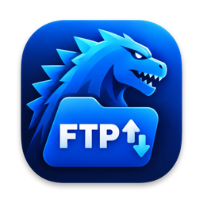
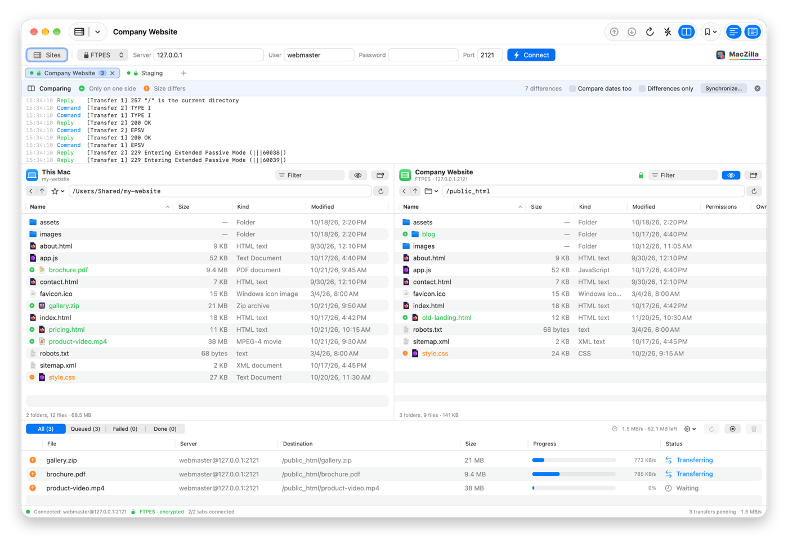
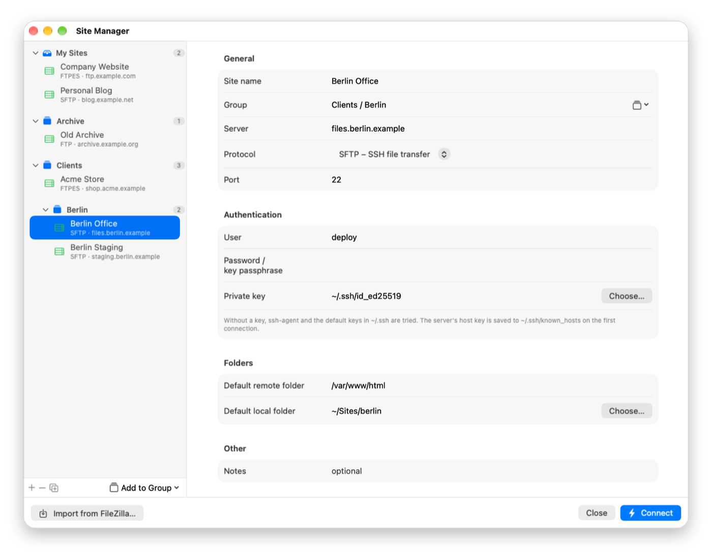

MacZilla
FTP, FTPS and SFTP client
MacZilla is a free, open-source, native FTP, FTPS and SFTP client for macOS in the spirit of FileZilla: two panes, tabs, a transfer queue, folder sync and a Site Manager.
A free, native alternative to FileZilla, Cyberduck and Transmit on the Mac.
Download MacZilla for macOS (zip)
Full documentation · All releases · Source code: GitLab · GitHub
Features
- Two panes, tabs with one connection each, and drag and drop
- FTP, explicit and implicit FTPS, and SFTP through macOS's own ssh
- Concurrent transfer queue with speed limits and retry
- Folder comparison and one-click synchronizing
- Site Manager with groups and bookmarks; passwords in the Keychain
- Imports sites, bookmarks and passwords from FileZilla
Screenshots


Frequently asked questions
Is MacZilla free?
Yes. MacZilla is free and open source under the GPL-3.0 license, with no ads, no accounts and no in-app purchases.
Is there a native FileZilla for Mac?
FileZilla itself runs on the Mac, but it is not a native Mac app. MacZilla is written in Swift and SwiftUI with the same idea: two panes, tabs, a transfer queue and a Site Manager. It can import your FileZilla sites, folders, bookmarks and passwords.
Can I connect with SFTP using my SSH key?
Yes. SFTP runs through macOS's own ssh, so your SSH keys, ssh-agent, ~/.ssh/config and known_hosts work exactly as in Terminal.
Does it support FTPS (FTP over TLS)?
Yes, both explicit (FTPES) and implicit (FTPS) TLS. A certificate macOS does not trust is shown with its SHA-256 fingerprint and connects only after you allow it.
Where are my passwords stored?
In the macOS Keychain. The site list itself is a JSON file in ~/Library/Application Support/MacZilla.
Which Macs does it run on?
Apple Silicon and Intel Macs with macOS 14 Sonoma or later.
Why does macOS block it the first time?
MacZilla is not notarized by Apple, which needs a paid developer account. Allow it once in System Settings ▸ Privacy & Security ▸ Open Anyway; see First launch.
FileZilla, Cyberduck and Transmit are named only for comparison; MacZilla is not affiliated with them.
Before you install
The apps are not notarized by Apple (that needs a paid developer account), so macOS blocks them the first time. Allow each app once in System Settings ▸ Privacy & Security ▸ Open Anyway. Every release lists a SHA-256 checksum.